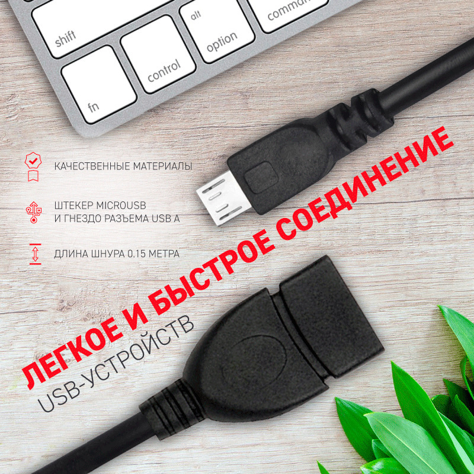

OTG-переходник microUSB Rexant 0.15 м
OTG-кабель-переходник microUSB–USB A длиной 0,15 м для подключения USB-устройств к смартфонам, планшетам и другим OTG-совместимым устройствам. По маркировке и описанию это кабель REXANT 18-1182.

Документация
Характеристики
Подробнее
Это короткий OTG-переходник с разъёмом microUSB с одной стороны и USB A с другой, предназначенный для прямого подключения флешек, клавиатур, мышей и другой USB- периферии к OTG-совместимым устройствам без ПК. У REXANT он выполнен в чёрном цвете, с круглой формой кабеля и пластиковыми корпусами разъёмов. Длина 0,15 м делает его удобным для компактного подключения рядом с устройством. На странице товара указаны никелированные контакты и отсутствие световой индикации и поддержки быстрой зарядки. Типовое применение — смартфоны, планшеты, КПК и коммуникаторы с поддержкой USB OTG.